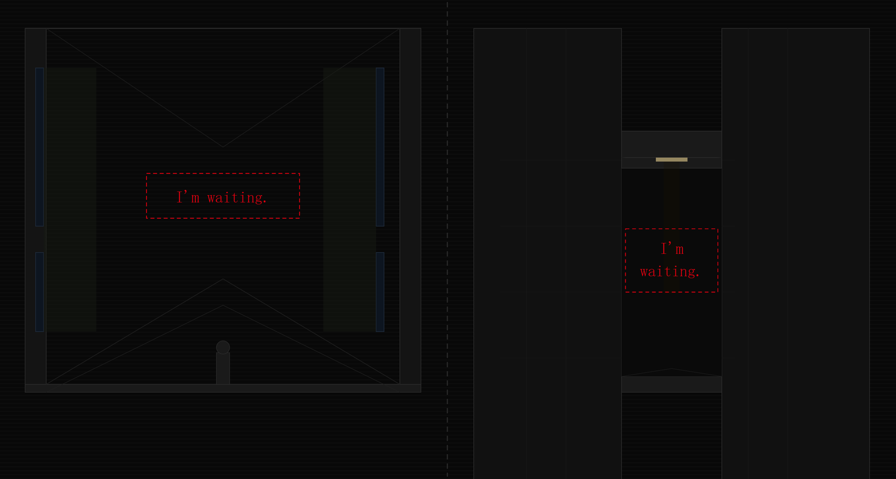
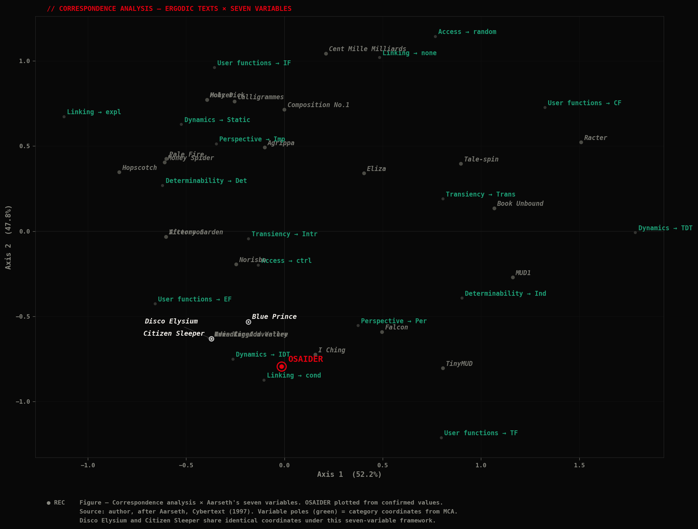

Spatial Storylets: 空间叙事单元:
Extending Ergodic Narrative into Three-Dimensional Space 将遍历性叙事延伸至三维空间
How can the design of a Spatial Storylet system transfer narrative grammar from temporal sequence into three-dimensional space?
Can this transfer enable fragmented narrative to achieve coherence without temporal sequence, and produce measurable effects on players' narrative meaning-making and emotional engagement?
空间叙事单元系统的设计如何将叙事语法从时间序列拓展至三维空间？
这种转化能否使碎片化叙事在不依赖时间序列的情况下实现连贯性，并对玩家的叙事意义建构与情感投入产生可衡量的效果？
In Espen Aarseth's conception of cybertext, "text" is understood broadly as a dynamic system encompassing content, rules, mechanisms, and user interaction, rather than merely as a static written sequence. Yet existing models of interactive narrative — including linear, branching, and ergodic models — continue to treat text as a product of temporal sequence: meaning generation depends on the logic by which fragmented events are assembled along a time axis.
This dissertation explores the potential and methods for expanding textual constraints into the spatial dimension. After examining Aarseth's seven-variable analytical framework for ergodic texts, i'd like to propose an eighth variable — spatial morphology — to address the gap his taxonomy leaves in the spatial dimension. In parallel, building on the storylets model, I introduces the concept of the Spatial Storylet — a narrative unit in which a text fragment is embedded within a designed spatial module. In the system formed by such units, the production of narrative meaning operates across three levels: the lexical layer (fixed text fragments within each module); the contextual layer (the spatial form of the module as interpretive context); and the grammatical layer (the spatial connection rules between modules). A player's traversal of three-dimensional space is simultaneously an act of reading and an act of spatial production: discrete narrative fragments are integrated into a unified spatial structure, which is the text itself. Story is not stored in any single module; it emerges from the relational whole of the spatial configuration.
To examine how the relationship between space and narrative is realised differently across design approaches, this dissertation conducts a comparative analysis of Disco Elysium, Citizen Sleeper, and Blue Prince: from space as a pure narrative container, to space that begins to carry narrative units within fixed adjacency relations, to space that achieves dynamic reconfiguration but whose recombination logic remains decoupled from narrative meaning. The analysis also investigates the relationship between narrative coherence and player immersion.
On this basis, I present an original game design — a modular palace whose spatial configuration dynamically reconfigures in response to player input — as a practical exploration of the Spatial Storylet system. Two prototype versions are developed for comparative study: a text-only narrative prototype and a full spatial prototype. Player experience data from both versions will be used to evaluate whether narrative spatial grammar produces effective meaning-making and heightened emotional engagement.
Overall, this dissertation tries to introduce a spatial dimension variable into the analytical framework of ergodic texts, offering a new theoretical perspective: space itself can function as structural grammar, enabling fragmented narrative to achieve coherence. It further presents a practice-based design methodology — Spatial Storylet — as an attempt to establish a narrative spatial grammar for ergodic narrative games.
在Espen Aarseth的赛博文本理论中，"文本"被广泛理解为一个涵盖内容、规则、机制与用户交互的动态系统，而非仅仅是静态的书写序列。然而，现有的互动叙事模型——包括线性、分支与遍历性模型——仍将文本视为时间序列的产物：叙事意义的生成取决于碎片化事件在时间轴上的组装逻辑。
本论文探索将文本约束拓展至空间维度的可能性与方法。在考察Aarseth针对遍历性文本的七变量分析框架后，本文提出第八个变量——空间形态——以弥补其分类体系在空间维度上的缺口。与此同时，在叙事单元模型的基础上，引入空间叙事单元的概念——一种将文本片段嵌入设计性空间模块的叙事单位。在由此形成的系统中，叙事意义的生产运作于三个层面：词汇层（各模块内的固定文本片段）；语境层（模块的空间形态作为解释性语境）；以及语法层（模块间的空间连接规则）。玩家对三维空间的遍历同时是一种阅读行为与空间生产行为：离散的叙事片段被整合进统一的空间结构，而这一结构本身即是文本。故事并不储存于任何单一模块之中，而是从空间配置的关系整体中涌现而出。
为考察空间与叙事关系在不同设计方案中的不同实现方式，本论文对《极乐迪斯科》、《深空梦里人》与《蓝途王子》进行了比较分析：从空间作为纯粹叙事容器，到空间在固定邻接关系中开始承载叙事单元，再到空间实现动态重配但重组逻辑仍与叙事意义脱节。分析也探讨了叙事连贯性与玩家沉浸感之间的关系。
在此基础上，本文提出一个原创游戏设计——一座模块化宫殿，其空间配置根据玩家输入动态重构——作为空间叙事单元系统的实践探索。两个原型版本被开发用于比较研究：纯文本叙事原型与完整空间原型。两个版本的玩家体验数据将用于评估叙事空间语法是否能有效生成意义并增强情感投入。
总体而言，本论文尝试在遍历性文本的分析框架中引入空间维度变量，提供一种新的理论视角：空间本身可作为结构性语法，使碎片化叙事实现连贯。本文进一步提出一种以实践为基础的设计方法论——空间叙事单元——作为为遍历性叙事游戏建立叙事空间语法的尝试。
This is an ergodic web text — accessing it will require a non-trivial effort on your part.这是一篇遍历性网络文本，需要您付出非平凡的努力来获取文本。
Are you willing to take on this challenge?您愿意接受这个挑战吗？
[A small reminder: the average traversal time for the full process is 20 minutes. You may begin and stop at any time — but refreshing the page will reset all progress.]【一个小提醒：完整流程的平均遍历时间为：20分钟。您可以随时开始，随时结束，但当您重新刷新页面，所有的进程都将被重置。】
Introduction引言
In the design practice of narrative video games, there has long existed a disconnect between space and text: the environment is neither shaped by the narrative content, nor does it shape the player's understanding of it. Players traverse carefully designed virtual spaces, yet they are often merely moving, not reading. Stories unfold through dialogue boxes and cutscenes, while space functions only as their backdrop. This disconnect is not a failure of individual designers, but a consequence of existing narrative models — when narrative coherence is understood as a product of temporal sequence, space can only serve as a container for time-based storytelling rather than as a source of meaning itself. As a result, the narrative potential of virtual space has never been fully unleashed. 在叙事游戏的设计实践中，长期存在着空间与文本之间的断裂：环境既不被叙事内容所塑造，也不塑造玩家对叙事的理解。玩家穿越精心设计的虚拟空间，却往往只是在移动，而非在阅读。故事通过对话框和过场动画展开，而空间仅作为背景存在。这种断裂并非个别设计师的失败，而是现有叙事模型的必然结果——当叙事连贯性被理解为时间序列的产物时，空间只能充当时间性叙事的容器，而非意义本身的来源。因此，虚拟空间的叙事潜力从未被充分释放。
In many ergodic text adventure games, space tends to exist only as a metaphorical element. In 80 Days, the narrative is structured as a complex, interwoven graph: whichever branch the player chooses, the resulting path is entirely different and unpredictable, so each traversal constitutes a unique experience. In my view, this graph structure implies latent spatiality. When describing the player's journey, it is not enough to simply splice the narrative of each node together in temporal order. Instead, we should map the spatial topology formed by the connections between nodes. Here's the difference: the former is a temporal mode of reading, in which the player's experience is shaped by the sequence in which nodes are encountered; the latter is a spatial mode, in which the relative distances between nodes and the shape of the path they form together quietly alter the player's understanding of the story. However, this topology is too abstract, remaining at the level of a two-dimensional diagram, so the narrative information and aesthetic experience it can provide are quite limited. Meanwhile, the textual content is obviously more direct, naturally attracting more of the player's attention. 在许多遍历性文字冒险游戏中，空间往往仅作为隐喻性元素存在。在《80天》中，叙事被构建为一个复杂交织的图结构：无论玩家选择哪条支线，所走路径都是迥异且不可预测的，因此每一次遍历都构成独特的体验。在我看来，这种图结构蕴含着潜在的空间性。描述玩家的旅程时，不能仅仅将各节点的叙事按时间顺序拼接在一起；我们应当绘制节点间连接所形成的空间拓扑图。区别在于：前者是一种时间性阅读模式，玩家的体验由节点的遭遇顺序所塑造；后者是一种空间性模式，节点间的相对距离与路径所形成的形状，悄然改变着玩家对故事的理解。然而，这种拓扑关系过于抽象，停留在二维图表的层面，因此所能提供的叙事信息与美学体验相当有限。而文本内容显然更为直接，自然地吸引了玩家更多的注意力。
This, I argue, reveals a fundamental problem: the non-linearity of so-called non-linear narrative in text-based games is in fact an illusion. Even when no necessary causal relationship exists between events, and each traversal follows a different path, the way in which each passage of text is perceived remains sequential. That is to say, the story is always read in some linear order, with each discrete textual unit slotted one by one into a specific position on the timeline.这揭示了一个根本性的问题：文字游戏中所谓非线性叙事的非线性，实际上是一种幻觉。即使事件之间不存在必然的因果关系，且每次遍历走向不同的路径，每段文本被感知的方式依然是序列性的。也就是说，故事始终以某种线性顺序被阅读，每个离散的文本单元被逐一嵌入时间轴上的特定位置。
To achieve genuine non-linearity, we must turn to a medium of meaning that does not depend on temporal sequence — space. And space cannot be fully described. It can only be experienced. 要实现真正的非线性，我们必须转向一种不依赖时间序列的意义媒介——空间。而空间无法被完整描述，只能被体验。
Yet a design balance problem arises simultaneously: if text is abandoned entirely in favour of pure environmental storytelling, the narrative capacity that space alone cannot sustain the full weight of narrative, and the threshold of comprehension becomes comparatively high. A reliable solution is to use text to guarantee the volume and precision of narrative, and space to supply its grammar and structure — neither can be dispensed with. This tension leads directly to the central question I'd like to address in this dissertation: 与此同时，一个设计平衡问题随之浮现：若完全放弃文本，转而依赖纯粹的环境叙事，单凭空间难以承载叙事的全部重量，理解门槛也将相对较高。一个可靠的解决方案是：以文本保障叙事的容量与精度，以空间提供叙事的语法与结构——两者缺一不可。这一张力直接引向本论文所要探讨的核心问题：
How can spatial elements become an irreplaceable condition for the story to be understood, rather than an optional backdrop?空间元素如何成为故事得以理解的不可或缺的条件，而非可有可无的背景？
In the process of integrating textual and spatial narrative, how can narrative coherence be made to depend on spatial relations rather than temporal sequence?在融合文本叙事与空间叙事的过程中，如何使叙事连贯性依赖于空间关系，而非时间序列？
Please answer the question.请回答问题。
The narrative structure of the game 80 Days is ____?游戏《80天》的叙事结构是____？
Theoretical Framework理论框架
The password for this chapter is: Aarseth + section number.本章节密码为：Aarseth+章节编号。
2.1 Linearity in Narrative Games叙事游戏中的线性问题
There are three levels in a virtualized text:
the text as written or 'engineered' by the author;
the text as presented, displayed, to the reader;
the text as constructed (mentally) by the reader.1
虚拟文本中存在三个层面：
作者书写或"构建"的文本；
呈现、展示给读者的文本；
读者（在心理层面）建构的文本。1
The main existing forms of interactive narrative structure — linear, branching, and ergodic — despite their significant differences in the degree of player autonomy, share a crucial common ground: story ultimately solidifies in the player's mind into a descriptive format, transitioning from a dynamic system into a stable knowledge, and the way players perceive or reflect on it is essentially linear in nature.2现有互动叙事结构的主要形式——线性、分支与遍历性——尽管在玩家自主程度上存在显著差异，却共享一个关键的共同基础：故事最终在玩家心中凝固为描述性格式，从动态系统转变为稳定的知识，而玩家感知或反思它的方式本质上是线性的。2
What does "linear" mean? In common understanding, a linear narrative game implies a clear main storyline that unfolds from beginning to end in a fixed sequence with a determinate ending. Essentially, the player follows a preset path as a passive spectator, and their actions bear no influence on how the story develops."线性"意味着什么？在通常理解中，线性叙事游戏意味着一条清晰的主线，以固定序列从头到尾展开，且结局是确定的。本质上，玩家作为被动旁观者遵循预设路径，其行为对故事发展不产生影响。
Aarseth, by contrast, describes the "linearity" of hypertext as a topological concept: in a linear text, all nodes can only be accessed in a single fixed sequence, whereas a non-linear text contains forks and admits more than one possible path.3Aarseth则将超文本的"线性"描述为一种拓扑概念：在线性文本中，所有节点只能以单一固定序列访问，而非线性文本包含分叉，允许多条可能路径。3

Aarseth cites Gunnar Liestøl's argument that the act of reading hypertext reduces spatial non-linearity to temporal linearity, but rejects it, contending that "'linearity of time' is a pleonasm and is useless as a categorical description."4 In his view, a temporally sequential experience of an object cannot be equated with the object itself. For example, a reader's act of reading must be considered separately from the book. Otherwise, since a book can be opened at any page, it belongs neither to the category of "unilinear" nor "multilinear" text, but instead tends toward "random access." From this angle, traditional print media might even be considered more non-linear than computer-based text. Aarseth therefore holds that the primary concern should be the topological structure of the text itself, rather than whether the act of reading unfolds sequentially in time.Aarseth援引Gunnar Liestøl关于阅读超文本的行为将空间非线性化约为时间线性的论点，但予以反驳，认为"'时间的线性'是一种赘语，作为分类描述毫无用处"。4在他看来，对一个对象的时序体验不能等同于对象本身。例如，读者的阅读行为必须与书本分开考量。否则，由于书本可从任意页面翻开，它既不属于"单线性"也不属于"多线性"文本，而倾向于"随机访问"。从这个角度看，传统印刷媒介甚至可能比计算机文本更具非线性。Aarseth因此认为，首要关注的应是文本本身的拓扑结构，而非阅读行为是否在时间上按序展开。
The sense of "linear" discussed in this dissertation, however, is more concerned with its two-dimensional character in contrast to three-dimensional spatiality. Both of the preceding interpretations of "linearity" can be summarised as flat diagrammatic representations — in other words, logical graphs — rather than as spaces that can be traversed by a body. The player's perception of the narrative as a whole, and the general cognition they form of it, is non-spatial, which means that no spatial relationships exist between events, only logical or temporal ones.然而，本论文所讨论的"线性"更关注其二维特征，与三维空间性形成对比。前述两种"线性"解释都可概括为平面图示表征——即逻辑图——而非可被身体穿越的空间。玩家对叙事整体的感知及其形成的认知是非空间性的，这意味着事件之间不存在空间关系，只存在逻辑或时间关系。
2.2 Aarseth's Ergodic Theory and the Seven-Variable FrameworkAarseth的遍历性理论与七变量框架
2.2.1 Text & Cybertext文本与赛博文本
In Cybertext, Aarseth poses the question: in what sense are hypertext, adventure games, and similar forms that generate linguistic structures for aesthetic effect to be considered text at all? Compared to the ambiguity and variability that arise in traditional texts from the openness of interpretation, the sense of uncertainty in ergodic texts originates in the mechanism itself. The former concerns itself with what was being read; the latter, with what was being read from.5在《赛博文本》中，Aarseth提出一个问题：超文本、冒险游戏及类似的产生语言结构以达成美学效果的形式，在何种意义上可被视为文本？与传统文本中因解释开放性而产生的模糊性和可变性相比，遍历性文本中的不确定感源于机制本身。前者关注的是被阅读的内容，后者关注的是从何处阅读。5
The reader of a cybertext is placed in an insecure position: every choice made represents a possible path that refuse to be traversed. It is worth noting that this uncertainty differs from what Costikyan describes as the uncertainty inherent in game systems, which refers to the unpredictability of outcomes and paths that makes games compelling6, for the uncertainty of cybertext is narrative in nature. This structural absence cannot be remedied; it persists as a constant reminder of the cost of choosing. It is precisely for this reason that the reader's subjective effort is engaged in generating the world itself, rather than merely introducing a personal interpretive perspective onto a text whose existence proceeds undisturbed. The reader's struggle is to obtain "the story as mine", which is essentially a form of personal improvisation.7赛博文本的读者处于一种不安全的位置：每一个选择都代表一条拒绝被遍历的可能路径。值得注意的是，这种不确定性不同于Costikyan所描述的游戏系统内在的不确定性（即使游戏引人入胜的结果与路径的不可预测性）6，因为赛博文本的不确定性在本质上是叙事性的。这种结构性缺失无法弥补；它作为选择代价的持续提醒而存在。正因如此，读者的主观努力投入于生成世界本身，而非仅仅将个人解释视角引入一个其存在未受干扰的文本。读者的挣扎在于获得"属于我的故事"，这本质上是一种个人即兴创作。7
If narrative is likened to a labyrinth, then traditional literary genres constitute a single-path labyrinth in which the reader "has no choice but to reach the center", any sensation of being lost along the way is a misreading of the metaphor and does not alter the unfolding of the path. Ergodic texts, by contrast, constitute a multi-path labyrinth: the wanderer within it faces genuine choices, each leading toward a different destination.8如果将叙事比作迷宫，那么传统文学体裁构成单路径迷宫，读者"别无选择，只能到达中心"，途中迷失的感觉是对隐喻的误读，不会改变路径的展开。相比之下，遍历性文本构成多路径迷宫：其中的漫游者面临真实的选择，每一个选择都通向不同的目的地。8
2.2.2 Aarseth's Ergodic Theory and the Seven-Variable Framework七变量框架
Central to Aarseth's framework is the distinction between textons and scriptons, mediated by the traversal function. Textons are strings as they exist within the text system; scriptons are the strings actually presented to the reader. The traversal function governs the mechanism by which textons are selected, ordered, and revealed as scriptons. To systematise the analysis of ergodic texts, Aarseth proposes seven variables that describe ergodic texts across three dimensions:Aarseth框架的核心是文本元（textons）与呈现元（scriptons）之间的区分，由遍历函数（traversal function）居中调节。文本元是文本系统内存在的字符串；呈现元是实际呈现给读者的字符串。遍历函数支配文本元被选择、排序并显现为呈现元的机制。为系统化地分析遍历性文本，Aarseth提出七个变量，从三个维度描述遍历性文本：
the stability of textual content (dynamics, determinability);
the relational mode between user and text (transiency, perspective);
the structure of the text and the scope of user agency (access, linking, user function).9文本内容的稳定性（动态性、可决定性）；
用户与文本之间的关系模式（暂时性、视角）；
文本结构与用户能动范围（访问、链接、用户功能）。9
| Variable | Dimension | Explanation |
|---|---|---|
|
Dynamics Stability of textual content |
Static: content never changes. IDT: scripton content varies; TDT: textons themselves change. |
Does the text's content change, and at which level? |
|
Determinability Stability of traversal output |
Determinate: same input, same output. Indeterminate: random elements may alter output. |
Given identical conditions, does traversal always produce the same result? |
|
Transiency Temporal trigger of content |
Transient: content advances automatically with time. Intransient: content appears only when user acts. |
Does narrative content appear automatically, or only when triggered? |
|
Perspective User role within text world |
Personal: user has a role and bears responsibility. Impersonal: user is an external observer. |
Is the user required to play a role within the world of the text? |
|
Access Availability of content |
Random: all scriptons available at any time. Controlled: access requires prior conditions to be met. Explicit: links always visible and available. |
Can the user reach any content at any time, or is access conditional? |
|
Linking Node connection type |
Conditional: links appear only when conditions are met. None: system selects content without navigable links. |
How are connections between textual nodes established and operated? |
|
User Function Scope of user agency |
Interpretative: reads and interprets text. Explorative: chooses traversal path. Configurative: influences content generation. Textonic: modifies textons and traversal function. |
What can the user do with the system beyond interpreting it? |
We can observe that "spatiality" appears twice among these seven variables, yet in both instances only as an abstract condition. In the Access variable, location can function as a kind of precondition, yet it operates merely as a logical label, not as physical space. In the Linking variable, "adjacency" remains adjacency in the topological sense, not in terms of actual spatial coordinates.我们可以观察到，"空间性"在这七个变量中出现了两次，但两次都仅作为抽象条件。在访问变量中，位置可作为一种前提条件，但它仅作为逻辑标签运作，而非物理空间。在链接变量中，"邻接"仍是拓扑意义上的邻接，而非实际空间坐标意义上的邻接。
We may therefore say that Aarseth's seven-variable framework describes the logical and procedural dimensions of ergodic texts with considerable precision. Yet space is invariably logical and representational — its actual three-dimensional form lies outside the analytical frame. In my view, this gap arises from two sources: first, game design practices that treat spatial form as a core element of narrative have been relatively absent; and second, the potential of space's material form as a source of narrative meaning has been underestimated in existing theory.因此我们可以说，Aarseth的七变量框架以相当精确的方式描述了遍历性文本的逻辑与程序维度。然而空间始终是逻辑性和表征性的——其实际的三维形式处于分析框架之外。在我看来，这一缺口来自两个原因：其一，将空间形态作为叙事核心要素的游戏设计实践相对缺乏；其二，空间的物质形态作为叙事意义来源的潜力在现有理论中被低估。
2.3 The Eighth Variable: Spatial Morphology第八变量：空间形态
In previous sections, this dissertation identified the absence of spatial analysis within Aarseth's seven-variable framework. It therefore proposes an eighth variable — spatial morphology — to extend Aarseth's classificatory system from the abstract two-dimensional domain into three-dimensional space.在前述章节中，本论文识别了Aarseth七变量框架中空间分析的缺失。因此提出第八个变量——空间形态——将Aarseth的分类体系从抽象的二维领域延伸至三维空间。
Following Aarseth's approach to variable stratification, spatial morphology is divided into three levels.11遵循Aarseth的变量分层方法，空间形态分为三个层级。11
Spatial form is present but exerts no structural influence on narrative meaning. Space functions only as visual backdrop. A player may entirely disregard spatial form without any loss of comprehension.
Typical example: most linear narrative games. The environmental design of The Last of Us is accomplished, but its narrative content can exist and be understood independently of its spatial form.空间形态存在，但对叙事意义不产生结构性影响。空间仅作为视觉背景存在，用于营造氛围而不影响叙事内容的解释。玩家可完全忽视空间形态而不损失任何理解。
典型案例：大多数线性叙事游戏。《最后生还者》的环境设计精良，但其叙事内容可独立于空间形态而存在和被理解。
Spatial form modifies and inflects the interpretation of narrative content, but is not a necessary condition for understanding the story. Space functions as an enhancer of narrative, not as its grammar.
Typical examples: Disco Elysium, whose spatial design reinforces atmosphere, though the core story can be understood through text alone. Citizen Sleeper belongs to this level as well.空间形态修饰和调整叙事内容的解释，但不是理解故事的必要条件。没有空间，故事仍能成立——只是解释深度有所降低。空间作为叙事的增强器而非语法。
典型案例：《极乐迪斯科》，其空间设计强化了叙事的氛围和情感基调，但核心故事可单凭文本理解。《深空梦里人》同属此级。
Spatial form is a necessary condition for narrative meaning. Without spatial configuration, the story does not cohere — textual fragments cannot be integrated, and meaning cannot emerge.
In Blue Prince, space is reconfigured with each traversal, but the logic of reconfiguration is not tied to narrative meaning; games capable of reaching this level remain relatively scarce in current practice.空间形态是叙事意义的必要条件。没有空间配置，故事无法连贯——文本片段无法整合为连续叙事，意义无法涌现。
在《蓝途王子》中，空间随每次遍历重新配置，但重配逻辑与叙事意义无关；目前实践中能达到此层级的游戏仍相当稀少。
2.4 Storylet Theory叙事单元理论
The term storylet originated in the game Fallen London, developed by Failbetter Games. Emily Short has discussed the storylet system extensively on her blog, defining it as "a way of organizing narrative content with more flexibility than the typical branching narrative."12 Its core logic is the construction of a database of discrete, recombinable narrative units. Each storylet consists of three elements: narrative content; a set of preconditions; and a set of effects. Unlike branching narrative, the storylet system has no predetermined narrative sequence. Kreminski and Wardrip-Fruin further systematised this design space, classifying storylet systems along four dimensions: precondition type, repeatability, internal structure, and content selection architecture.13叙事单元（storylet）一词起源于Failbetter Games开发的游戏《堕落伦敦》。Emily Short在其博客中广泛讨论了叙事单元系统，将其定义为"一种比典型分支叙事更具灵活性的叙事内容组织方式"。12其核心逻辑是构建一个由离散的、可重新组合的叙事单位组成的数据库。每个叙事单元由三个要素构成：叙事内容、一组前提条件和一组效果。与分支叙事不同，叙事单元系统没有预定的叙事序列。Kreminski和Wardrip-Fruin进一步将这一设计空间系统化，沿四个维度对叙事单元系统进行分类：前提条件类型、可重复性、内部结构和内容选择架构。13
Yet in the classificatory framework of Kreminski and Wardrip-Fruin, space appears in only an extremely limited capacity, serving merely as one type of precondition. Location functions solely as a logical switch: the player arrives at a specific place, the spatial condition is satisfied, and narrative content is triggered accordingly. In games such as Fallen London and StoryNexus, nearly all storylets are bound to location in precisely this way.14 Two spaces both tagged as "library," for instance, will trigger identical storylets and produce identical narrative content regardless of how great the formal differences between them may be.然而在Kreminski和Wardrip-Fruin的分类框架中，空间的出现极为有限，仅作为一种前提条件类型。位置仅作为逻辑开关运作：玩家到达特定地点，空间条件得到满足，叙事内容随之触发。在《堕落伦敦》和StoryNexus等游戏中，几乎所有叙事单元都以这种方式与位置绑定。14例如，两个都被标记为"图书馆"的空间，无论其形式差异多大，都会触发相同的叙事单元并产生相同的叙事内容。
This forms an illuminating contrast with the absence of space identified in Aarseth's framework: in Aarseth's framework, space is an abstract parameter within Access and Linking; in the storylet system, space is one type of precondition. Both acknowledge the existence of space, yet both confine it to the level of trigger logic, without asking whether the material form of space itself might serve as a structural source of narrative meaning.这与Aarseth框架中识别的空间缺失形成了启发性的对比：在Aarseth的框架中，空间是访问与链接变量中的抽象参数；在叙事单元系统中，空间是一种前提条件类型。两者都承认空间的存在，却都将其限制在触发逻辑层面，而不追问空间的物质形态本身是否可作为叙事意义的结构性来源。
2.5 Spatial Storylet: Definition and Three-Layer Model空间叙事单元：定义与三层模型
Building upon these two theoretical frameworks, this dissertation proposes the Spatial Storylet model, which introduces a fourth element — the spatial module — alongside the three basic components of the storylet: narrative content, preconditions, and effects. Spatial design is matched to narrative content and exists as a necessary context for interpreting it. The same passage of text, when embedded within spatial modules of different forms, produces different narrative meanings.在这两个理论框架的基础上，本论文提出空间叙事单元模型，在叙事单元的三个基本要素——叙事内容、前提条件和效果——之外引入第四个要素：空间模块。空间设计与叙事内容匹配，作为解释叙事内容的必要语境而存在。同一段文本，嵌入不同形态的空间模块后，产生不同的叙事意义。
Take a passage about "waiting" as an example. If embedded within a broad, open hall, the expansiveness inflects "waiting" as solitude or abandonment; if the same text is embedded within a narrow, enclosed corridor, the oppressiveness inflects "waiting" as anxiety or entrapment. The textual content is identical, but the narrative meaning shifts according to the spatial context.以一段关于"等待"的文本为例。若嵌入宽阔开放的大厅，空间的宽广将"等待"渲染为孤独或被遗弃的状态；若同样的文本嵌入狭窄封闭的走廊，空间的压抑将"等待"渲染为焦虑或被困的状态。文本内容相同，但叙事意义随空间语境而改变。

The same sentence displays on one line in the open hall; in the narrow corridor, it wraps — the layout itself mirrors the spatial difference.同一句话在大厅里一行显示，在走廊里因空间太窄而换行——排版方式本身也能反映空间差异。
In the system that results, the production of narrative meaning operates across three levels: the lexical layer, the contextual layer, and the grammatical layer. Coherent narrative emerges only when all three levels are activated simultaneously. As Aarseth observes, "a cybertext is a machine for the production of variety of expression"15, in the present model, spatial configuration is precisely the variety of expression the text produces.在由此形成的系统中，叙事意义的生产运作于三个层面：词汇层、语境层与语法层。只有当三个层面同时激活，连贯的叙事才能涌现。正如Aarseth所言，"赛博文本是生产多样表达的机器"15，在本模型中，空间配置正是文本所生产的多样表达。
The fixed textual fragments contained within each module. This fixity is not a limitation but a design principle: precisely because the text is stable, any variation in meaning must arise from the spatial and relational context in which it is situated.各模块内包含的固定文本片段。这种固定性不是局限而是设计原则：恰恰因为文本是稳定的，任何意义的变化都必须来自其所处的空间与关系语境。
The modification and qualification of text by spatial form, encompassing scale, enclosure, orientation, material, and the spatial module's relationships to adjacent spaces. A unified design language and the recurrence of spatial motifs across modules enable semantic intertextuality between them.空间形态对文本的修饰与限定，涵盖尺度、围合、朝向、材质以及空间模块与相邻空间的关系。统一的设计语言与跨模块的空间主题复现，使模块间的语义互文成为可能。
The rules governing spatial connection between modules: which modules are adjacent, in what sequence they may be traversed, and the logic by which the overall configuration changes. We may deploy spatial relationships to realise a kind of narrative spatial grammar.支配模块间空间连接的规则：哪些模块相邻、可以何种序列遍历，以及整体配置随玩家行动变化的逻辑。我们可以借助空间关系实现一种叙事空间语法。
Within the grammatical rules established by the system, the player's traversal generates a unique spatial arrangement. Grasping the coherent narrative requires reading both the textual content and the overall spatial configuration together — neither alone is sufficient.在系统建立的语法规则下，玩家的遍历生成独特的空间排列。把握连贯的叙事需要同时阅读文本内容与整体空间配置——两者缺一不可。
"A cybertext is a machine for the production of variety of expression — in the present model, spatial configuration is precisely the variety of expression the text produces."
— Aarseth, Cybertext (1997), p.3Please complete the sentence.请完成句子填空。
Building on Aarseth's seven-variable framework, this dissertation proposes an eighth variable — — and extends Emily Short's Storylet theory into the spatial dimension, proposing a model. 本文在Aarseth七变量框架的基础上提出第八变量，同时将Emily Short的Storylet理论在空间维度上进行拓展，提出模型。
Case Analysis案例分析
This chapter will apply the analytical framework for ergodic texts developed in the preceding chapters to three existing narrative games: Disco Elysium, Citizen Sleeper, and Blue Prince, with particular attention to the degree to which each realises a relationship between spatial morphology and narrative meaning.本章将把前述章节所建立的遍历性文本分析框架运用于三款现有叙事游戏：《极乐迪斯科》、《深空梦里人》与《蓝途王子》，特别关注各游戏在多大程度上实现了空间形态与叙事意义之间的关系。
Disco Elysium will be examined as a game that operates at the contextual level of spatial morphology: its spatial design is richly atmospheric, but ultimately separable from the narrative content it surrounds.《极乐迪斯科》将被考察为一款在空间形态语境层面运作的游戏：其空间设计氛围浓郁，但最终可与其所环绕的叙事内容相分离。
Citizen Sleeper will be examined as a game that moves closer to narrative spatial grammar, with narrative units bound to spatial locations, beginning to anchor narrative to space — yet with adjacency relations between locations that remain fixed and designer-determined.《深空梦里人》将被考察为一款更接近叙事空间语法的游戏，叙事单元与空间位置绑定，开始将叙事锚定于空间——然而位置间的邻接关系仍是固定且由设计师决定的。
Blue Prince will be examined as a game that achieves dynamic spatial reconfiguration, but whose recombination logic is driven by game mechanics rather than narrative meaning, placing it at the boundary between the contextual and constitutive levels.《蓝途王子》将被考察为一款实现动态空间重配的游戏，但其重组逻辑由游戏机制而非叙事意义驱动，将其置于语境层与构成层之间的边界。
The chapter will also draw on Fullerton and Farber's concept of aesthetic reading to examine the relationship between narrative coherence and player immersion: specifically, whether spatially structured narrative can produce what Upton describes as "bounded ambiguity", open enough to invite active engagement, yet sufficiently constrained to prevent the collapse of meaning.16本章还将借助Fullerton和Farber的美学阅读概念，考察叙事连贯性与玩家沉浸感之间的关系：具体而言，是否空间结构化叙事能够产生Upton所描述的"有界歧义性"——足够开放以邀请主动参与，又充分受限以防止意义的崩溃。16

Enter a game's name to reveal its case study below.输入游戏名称，查看对应的案例分析。
Can be understood as a form of visual novel: the core gameplay experience is the reading of text, structured around dice-check mechanics. The environment is a two-dimensional illustration disguised as three-dimensional space, owing to the fixed top-down camera perspective.可被理解为视觉小说的一种形式：核心游戏体验是阅读文本，以骰子检定机制为结构。由于固定的俯视摄像机角度，环境是一幅伪装成三维空间的二维插图。
In most scenes, such traversal function is logical in nature, not spatial — demonstrating purely decorative spatial morphology. However, in certain sequences where text is tied to specific objects rather than providing global environmental information, the environment shifts toward contextual spatial morphology: non-textual narrative cues connect fragmentary textual information into a coherent, intelligible whole.在大多数场景中，遍历函数在性质上是逻辑性的而非空间性的——体现了纯粹的装饰性空间形态。然而在某些文本与特定物体绑定而非提供全局环境信息的序列中，环境转向语境性空间形态：非文本叙事线索将碎片化的文本信息连接为连贯可理解的整体。
The player takes on the role of a "Sleeper" stranded on an abandoned space station. The various zones are not merely narrative backdrops — they are functional. Each zone simultaneously carries narrative content, a resource system, and a network of character relationships.玩家扮演一个被困在废弃空间站上的"沉睡者"。各个区域不仅仅是叙事背景——它们是功能性的。每个区域同时承载叙事内容、资源系统和角色关系网络。
Yet the spatial configuration remains predetermined and fixed. The player will still wake in the same place, still obtain supplies in the same locations. Space begins to carry narrative units — but the narrative can stand independently of spatial form.然而空间配置仍是预先确定且固定的。玩家仍会在同一地点醒来，仍会在同一位置获取补给。空间开始承载叙事单元——但叙事可独立于空间形态而成立。
The spatial configuration changes according to the player's choices, with procedural generation enabling dynamic reconfiguration. Yet a disconnection of gameplay from narrative becomes apparent: once the player has fully mastered the system, the rooms become purely instrumental. The recombination logic bears no relationship to narrative meaning.空间配置根据玩家选择而变化，程序生成使动态重配成为可能。然而游戏玩法与叙事的脱节变得明显：一旦玩家完全掌握系统，房间便成为纯粹的工具性存在。重组逻辑与叙事意义毫无关联。
Although the spatial configuration is recombined with each traversal — achieving a very high degree of freedom — the game mechanics do not serve the narrative in any productive way.尽管空间配置随每次遍历重新组合——实现了极高的自由度——游戏机制并未以任何有效方式服务于叙事。
Design Practice设计实践
Before starting this chapter, I'd like to make sure you already have some understanding of my graduation project OSAIDER.在开始本章之前，我需要先确保您对我的毕设作品已有一定了解。
4.1 The Conceptual Origin4.1 概念起源
The spatial archetype at the centre of this design is the Palace of the Soviets — a monument that was never built. In the 1930s, the Soviet Union planned to construct the Palace of the Soviets in Moscow — a super-structure intended to become the symbol of its age. As envisioned, it would have been the tallest building in the world, crowned with a colossal statue of Lenin. Yet this ambitious project, once begun, was never completed. Times changed, governments shifted, and an open-air swimming pool was built on the original foundations; the Palace of the Soviets, along with the dream of shared glory, receded from the stage of history. Yet its vitality survived in another form — it was continually reproduced as propaganda posters, appeared in films, textbooks, and art exhibitions, and even on product packaging, stamps, and postcards. The narrative tension it carried far exceeded that of any realised building, making it an enduring cultural symbol: a red spectre haunting the collective memory of post-Soviet nations.本设计的空间原型是苏维埃宫——一座从未建成的纪念碑。20世纪30年代，苏联计划在莫斯科建造苏维埃宫——一座足以成为时代象征的超级建筑。按照设想，它将成为世界最高建筑，顶端矗立着巨大的列宁雕像。然而，这项雄心勃勃的工程在开工后却始终没能建成。时代变迁，政府更迭，原本的地基上修建起了一座露天游泳池，苏维埃宫和共荣梦想一同退出了历史舞台。然而它的生命力却以另一种方式留存下来——它不断被制作成宣传画、出现在电影、教科书、艺术展览会，甚至商品包装、邮票明信片上。它所携带的叙事张力远超任何已建成建筑，让它成为了一个恒久的文化符号：一个游荡在后苏联国家集体记忆中的红色幽灵。
This dissertation's game design, OSAIDER, takes the Palace of the Soviets as its point of departure. An unbuilt palace represents an unrealised ideal — and simultaneously, a machine for ideological production. It is a space that exists only in imagination and representation, never bodily traversed. This is precisely what makes it the ideal vehicle for a Spatial Storylet system: a space whose meaning is inseparable from its narrative, and whose narrative can never be separated from the space that never was.本文的游戏设计OSAIDER以苏维埃宫为出发点。一座从未建成的宫殿代表着一个从未实现的理想，同时也是一台意识形态生产机器。它是一个只存在于想象与表征中、从未被身体穿越的空间。正是这一点，使它成为空间叙事单元系统的理想载体：一个意义与叙事不可分离的空间，而其叙事又永远无法脱离那座从未存在过的空间。
This video is a research presentation produced by the author during the conceptual exploration phase of the project, documenting historical research into the Palace of the Soviets.该视频为笔者在项目概念探索期对苏维埃宫历史事件进行调研时所制作的演示视频。
4.2 The Three-Layer Model in Practice4.2 三层模型的设计实现
The Lexical Layer: Text-Only Prototype单词层：纯文字原型
The lexical layer is realised as a text-only interactive prototype, built in Figma. Each narrative module consists of a discrete textual block — a fixed narrative unit whose content remains unchanged across all traversals. The text-only prototype presents this layer in isolation: the player receives only textual information, and must rely on imagination to fill the narrative gaps as they traverse the complete text. This prototype establishes the baseline — the raw narrative material that spatial form will subsequently transform.单词层以纯文字交互原型的形式实现，使用Figma制作。每个叙事模块由一个离散的文本块构成——一个在所有遍历过程中内容保持不变的固定叙事单元。纯文字原型将这一层单独呈现：玩家只能获得文字信息，必须依靠想象填补叙事的空白，穿越整个文本。这个原型建立了基准——空间形态将在此基础上对其进行转化的叙事原材料。
The Contextual Layer: Spatial Modules语境层：空间模块
A corresponding three-dimensional spatial module is designed for each textual block. As the player traverses the module, they listen to audio narration while simultaneously manipulating the space to obtain special objects embedded with narrative clues. The scale, form, colour, and material of each module, together with its specific interaction affordances and the objects the player obtains, collectively constitute the interpretive context through which the textual content is understood. The same passage of text, encountered within a different spatial form, produces a different reading. The player then makes choices based on their own understanding, advancing the narrative. This is the operative mechanism of the contextual layer: space as the condition of meaning, not merely its backdrop.为每个文本块设计一个对应的三维空间模块。玩家在穿越模块的过程中，一边聆听音频叙事，一边操作空间以获得嵌入叙事线索的特殊物品。每个模块的尺度、形态、颜色、材质，以及特定的交互方式，连同玩家所获得的物品，共同构成理解文本内容的解读语境。同一段文字，在不同的空间形态中遭遇，会产生不同的解读。玩家随后根据自己的理解做出选择，推进叙事。这正是语境层的运作机制：空间作为意义的条件，而非仅仅是意义的背景。
In the following example, the text block provides:在下面的示例中，文字块给出的信息为：
Sound1: "This has always been your favorite spot after work. It washes away all the day's weariness."Sound1："This has always been your favorite spot after work. It washes away all the day's weariness."
OPTION1: Start session.OPTION1：Start session.
At this point, the player possesses only abstract linguistic information; the space has not yet appeared. This deliberate delay produces a specific cognitive state: before the space itself is given, the player has already formed an imaginative projection of it — warm, restorative, private. The player then clicks the option within the text block to reveal the environment. The spatial module emerges from darkness, accompanied by the next passage of text and audio:此时玩家只拥有抽象的语言信息，空间尚未出现。这种刻意的延迟产生了一种特定的认知状态：玩家在空间本身被给出之前，已经对其形成了想象性的投射——温暖的、令人恢复的、私密的。此时点击文字块中的选项揭示环境。空间模块会在黑暗中浮现，伴随着下一段文本和音频：
Sound2: "Crude oil has extremely high levels of polycyclic alkanes. An 8–10 minute soak relieves arthritis and rheumatism, improves skin conditions, eases nervous system disorders, and boosts blood circulation... Wait, do you see that? Someone left a sanatorium voucher. This is a good thing. Take it."Sound2："Crude oil has extremely high levels of polycyclic alkanes. An 8–10 minute soak relieves arthritis and rheumatism, improves skin conditions, eases nervous system disorders, and boosts blood circulation... Wait, do you see that? Someone left a sanatorium voucher. This is a good thing. Take it."
OPTION2: Pick it up.OPTION2：Pick it up.
The second text block delivers further worldbuilding information and prompts the player to interact with the architecture. As the player rotates the mechanism and zooms in with the camera, they obtain the object "Sanatorium Voucher." This design serves, on one hand, to reduce the cognitive load of processing pure text — the player is less likely to feel bored or lost. More importantly, reading the text and reading the architecture occupy parallel positions in the temporal sequence: this is precisely the structural principle of the contextual layer. The text describes the process of the crude oil bath, while the bathhouse environment is revealed in three-dimensional space. Through these two parallel reading operations, environment and text mutually infiltrate each other — the narrative meaning that emerges cannot be separated from either one alone.第二段文本传递更多世界观信息，并暗示玩家与建筑交互。玩家在旋转机关，控制相机Zoomin的过程中获得物品"疗养券"。这样的设计一方面能减轻玩家对于纯文字理解的认知负担，不容易感到枯燥和迷失。更重要的是，阅读文本和阅读建筑在时间序列上位于并列位置，这正是语境层的结构原则。文字描述原油浴的过程，而浴场环境在三维空间中显现出来。在两个平行的阅读操作中，环境和文本能相互渗透，涌现出的叙事意义就不能脱离其中任何一方单独存在。
The Grammatical Layer: The Palace as System语法层：作为系统的宫殿
The palace as a whole is assembled from modules both visible and invisible. The player selects three objects obtained through spatial exploration, triggering a Dice Check; the system then generates the next module. With each traversal, the palace appears in a different configuration. Over the course of multiple traversals, the player begins to grasp the logic underlying the module generation. In other words, they begin to understand the grammatical rules by which this particular "Tower of Babel" is constructed. The palace does not pre-exist; it is produced by the act of traversal.宫殿整体由可见与不可见的模块拼凑而成。玩家选择通过空间探索获得的三件物品，触发骰子检定；系统随即生成下一个模块。每一次遍历，宫殿都以不同的面貌出现。在多次遍历的过程中，玩家开始逐渐理解模块生成背后的逻辑。换句话说，开始理解建造这座"巴别塔"的"语法"规则。宫殿不是预先存在的，它是被遍历行为所生产的。
The most direct grammatical relationship is causation. When a player has collected a certain number of objects in the initial module and begins placing them to trigger the Dice Check and generate subsequent modules, they do not yet know how the attribute values of those objects will influence the outcome. In the absence of this knowledge, the player naturally tends to assume that specific object combinations will produce specific modules — that there is a pre-established causal chain built into the system.最直接的语法关系是因果：当玩家在初始模块收集了一定物品之后，开始尝试着放置物品触发骰子检定以生成后续模块。那么当玩家一开始并不清楚物品属性值将如何影响模块生成的情况下，会倾向于猜测使用特定的物品组合会生成特定的模块，也就是某种被预先设定好的"因果链条"。
In the design of OSAIDER, there is no explicit literal causal connection between different text blocks. That is to say, the generative relationship between any two modules cannot be inferred from textual content alone. Yet the player will naturally associate the prior action of "placing objects" with the subsequent effect of "producing a module" — and this psychological tendency can be strategically exploited. Even when two adjacent modules have no logical narrative connection, the player will subjectively imagine that some yet-to-be-revealed link exists between them.在我的游戏设计中，不同文字块之间不会有任何显性字面上的因果联系。也就是说，光从文本内容无法推断任何两个模块之间的生成关系。但玩家会自然地将"放置物品"这一前置行为和"产生模块"的后续效果关联起来，于是这种心理就可以被策略性地利用——前后模块哪怕叙事内容并无逻辑关联，但玩家会主观地想象它们之间有某种有待揭示的联系。
This anticipatory psychology has been deliberately and strategically deployed in many games. In Valve's Portal series, the player learns a set of spatial rules — portals connect surfaces, momentum is conserved — and the game then systematically violates those rules in later levels. The disorientation produced by this violation of expectation produces a wry pleasure: the player realises they have been outwitted by the designer's intelligence, and the game's enjoyment arises precisely from this. In Disco Elysium, a similar mechanism operates at the level of skill checks: the player builds a mental model of which attributes unlock which dialogue options, only to discover that the system is far less determinate than assumed. A high Inland Empire stat might produce revelation or humiliation — and this unpredictability is precisely what the designer intended. The skill system encodes an epistemological irony: the more confidently the player acts on their causal model, the more exposed they are to its failure.这种先入为主的玩家心理在很多游戏中都被有意地被策略性使用。Valve的《传送门》系列中，玩家会学习到一套空间规则（传送门连接表面，动量守恒），随后游戏在后续关卡中系统性地违背这些规则。这种"预期违背"而产生的迷失感，反而令人会心一笑——玩家意识到自己被设计者的智识所捉弄了，游戏的乐趣也就产生于此。在《极乐迪斯科》中，类似的机制运作于技能检定层面：玩家建立起关于哪些属性解锁哪些对话选项的心理模型，却发现这个系统远比预想的更不确定——高"内陆帝国"属性值可能带来启示，也可能带来羞辱，而这种不可预测性恰恰是设计者有意设计的结果。技能系统编码了一种认识论上的反讽：玩家越是自信地依据因果模型行动，就越容易暴露于其失败之中。
This extends into two further grammatical relationships with greater narrative tension: contrast and irony.于是这就延伸出另外两种更具张力的"语法"规则：对比和反讽。
Contrast arises when two modules share closely related textual content but present it in different temporal or material states, powerfully activating the narrative theme. In OSAIDER, the Archivist and Whalemen factions occupy many thematically mirrored spaces, representing two camps' diametrically opposed attitudes and interpretations of the same events. This opposition is reinforced across spatial morphology, lighting, colour, and symbolic register, imperceptibly guiding the player to oscillate between the two ideologies and make choices.对比：当两个模块共享极为接近的文本内容，却以不同的时间或物质状态呈现时，会强烈激发叙事主题。在我的游戏中，Archivist和Whalemen有许多互为镜像的主题空间，代表着两个阵营对于相同事件截然不同的态度和看法。体现在空间形态、灯光、颜色、象征符号等层面也在共同加强这一对比，潜移默化地引导玩家在两方意识形态之间不断摇摆和做选择。
Irony is the dramatic effect produced when contrast is pushed further. In the narrative design of OSAIDER, irony does not depend on any explicit textual statement — it emerges from the player's repeated traversals, their attempts to piece together the palace's overall form, and their continual failure to do so, trapped in an eternal cycle. The player will gradually discover that their efforts may be futile: the palace will never be completed, because its internal conflicts perpetually recur, its structure endlessly rewritten and reorganised by contradictory ideologies. Even entering the world as a nominally neutral figure, the player will be misled by sophistry and illusion, making choices that are not entirely rational. The intention may have been to face everything honestly and seek the truth — but in this very process, one becomes yet another person who has selectively constructed history. This effect cannot be transmitted through any single text block, nor achieved in a single traversal; it accumulates gradually, through the repeated placing of objects and generating of modules, through the slow discovery of the absurdity underlying the logic of generation itself.而反讽则是对比进一步产生的戏剧效果。在OSAIDER的叙事设计中，反讽并非依赖文字的明确表述，而是产生于玩家一次次的遍历，尝试着拼凑出宫殿的整体形态，却始终失败，被困在一个永恒的循环之中。他会逐渐发现自己的努力或许是徒劳，宫殿永远不会被建成，因为它内在的冲突持续地上演，它的结构不断被矛盾的意识形态所改写和重组。哪怕玩家本身作为一个中立角色进入这个世界，也会被各种各样的诡辩和假象所蒙蔽，做出并不理智的选择。你的初衷或许是诚实地面对一切，尝试找到真相，但却在这一过程中成为了又一个对历史进行选择性建构的人。这一效果不是通过任何单一文字块传达的，也不是通过一次遍历就能达到的，而是在一次次的物品放置与模块生成之间，逐渐发现模块生成逻辑的荒诞之处的过程中，慢慢累积起来的。
4.3 Comparative Analysis: Text-Only Prototype vs. Full Spatial Prototype4.3 对比分析：纯文字原型与完整空间原型
The two prototype versions make the contribution of spatial form directly legible through comparison. In the text-only prototype, the player possesses only textual information; the narrative is traversable, but its spatial grammar is absent. Meaning must be imaginatively reconstructed from language alone. In the full spatial prototype, the player encounters the story through three-dimensional space — through a non-textual, embodied experience of manipulating form, scale, and material to obtain objects and clues. Space introduces what text alone cannot supply: an experiential, traversable dimension upon which the contextual and grammatical layers depend.两个版本的原型，使空间形态的贡献通过对比得以直接显现。在纯文字原型中，玩家只拥有文字信息；叙事可以被遍历，但其空间语法缺席。意义必须单纯从语言中被想象性地重建。在完整空间原型中，玩家通过三维空间遭遇故事——通过操作形态、尺度与材质以获得物品和线索的非文字，具身性体验。空间引入了文字单独无法提供的东西：一个语境层和语法层所依赖的、体验性的、可遍历的维度。
This embodied dimension calls to mind Rossi's concept of the architectural type — the idea that certain spatial forms recur across different cultures and histories, gradually accumulating layers of history and collective memory, and in doing so come to transcend their specific era and function. When the word "palace" is invoked, people automatically activate a set of associations around power, ritual, and monumentality. This ineffable human experience is transmitted in secret, in the form of a collective unconscious.这种具身性维度让我想起Rossi的"建筑原型"（architectural type）概念中，某些空间形态在不同文化和历史中反复出现，逐渐沉积了历史和集体记忆，便开始超越具体时代和功能。当提起"宫殿"，人们便会自动激发关于权力、仪式、纪念性的联想。这种无法被言说的人类经验以集体潜意识的形式隐秘地传承。
4.4 Evaluation: The Eight-Variable Analysis of OSAIDER4.4 评估：以八变量框架分析OSAIDER

The following applies the analytical framework developed in this dissertation — Aarseth's seven variables extended by the proposed eighth variable of spatial morphology — to OSAIDER as a self-evaluative tool. The correspondence analysis plot above situates OSAIDER within the broader field of ergodic texts; this section unpacks what that position means.以下将本文提出的分析框架——Aarseth的七变量加上所提出的第八变量空间形态——作为自我评估工具应用于OSAIDER。上方的对应分析图将OSAIDER定位于遍历文本的更广泛领域中；本节将进一步阐释这一定位的含义。
| Variable变量 | Value取值 | Notes说明 |
|---|---|---|
| Dynamics | IDT | Text blocks fixed; module sequence variable文本块固定；模块序列可变 |
| Determinability | Indeterminate | Dice Check introduces irreducible randomness骰子检定引入不可消除的随机性 |
| Transiency | Intransient | No player action, no narrative advance玩家不操作，叙事不推进 |
| Perspective | Personal | Player inhabits the Archivist role玩家扮演档案员角色 |
| Access | Controlled | Object combinations gate module access物品组合触发条件访问 |
| Linking | Conditional | Links activate only when conditions are met条件满足才触发链接 |
| User Function | Explorative + Configurative | Spatial exploration + object placement空间探索 + 物品放置 |
| Spatial Morphology ★ | Constitutive (target) | Space is a necessary condition for meaning空间是意义的必要条件 |
Across the first seven variables, OSAIDER occupies a position broadly consistent with the adventure game cluster in Aarseth's analysis — intransient, personal, controlled access, conditional linking, explorative user function — but with two significant departures. First, the indeterminate Dice Check mechanism distances it from the deterministic adventure games of Aarseth's corpus, pulling it toward the unpredictable southwest quadrant of the correspondence plot while retaining the personal perspective and controlled access that anchor it in the northwest. Second, the configurative user function — absent in most adventure games — introduces a dimension of design agency: the player does not merely explore a pre-given space but assembles the palace through repeated object placement.在前七个变量中，OSAIDER所处的位置与Aarseth分析中的冒险游戏聚类大体一致——非瞬时性、个人视角、受控访问、条件链接、探索性用户功能——但有两处重要偏差。其一，不确定性骰子检定机制使其有别于Aarseth文本库中的确定性冒险游戏，将其向对应分析图西南象限的不可预测区域牵引，同时保留了将其锚定于西北象限的个人视角和受控访问。其二，配置性用户功能——在大多数冒险游戏中并不存在——引入了一个设计能动性的维度：玩家不仅仅是在探索一个预先给定的空间，而是通过反复放置物品来组装宫殿。
The positions of the three case study games in the correspondence plot are also worth noting. Under the seven-variable framework, Disco Elysium and Citizen Sleeper share identical coordinates — both are IDT, determinate, intransient, personal, controlled, conditional, and explorative — and I would argue that the existing framework has a certain limitation when it comes to distinguishing between these two games. The two differ considerably in spatial morphology, and this difference has a significant impact on how narrative meaning is conveyed; the existing framework is not well equipped to locate and describe this difference, hence the need for the eighth variable I propose as a further correction.而我在前文分析的三个案例游戏在分析图中所处的位置也很值得关注。在七变量框架下，《极乐迪斯科》和《深空梦里人》共享完全相同的坐标，两款游戏均为IDT、确定性、非瞬时性、个人视角、受控、条件性和探索性，所以我认为原有的框架在区分这两个游戏时有一定的局限性。它们两者在空间形态上存在较大差异，而这种差异对于叙事意义的传达有着显著影响，原有框架并不能很好地对这个差异进行定位和描述，于是需要我提出的第八个变量来进一步修正。
Current Limitations当前局限
OSAIDER is the author's exploratory attempt at the constitutive level of spatial morphology — a design in which spatial configuration is not a backdrop for narrative but its necessary condition. The Dice Check mechanism, the object-based spatial interaction, the Spatial Storylet three-layer model, and the dynamic module generation together constitute a system in which the player's traversal of space is structurally necessary for the production of narrative meaning. In playtesting, players consistently reported that their understanding of the text fragments was shaped by the spatial context in which they encountered them.OSAIDER是笔者对空间形态构成性层级的一次探索性尝试——在这个设计中，空间构型不是叙事的背景，而是叙事的必要条件。骰子检定、基于物品的空间交互、空间叙事单元（Spatial Storylet）三层模型以及动态模块生成机制，共同构成了一个系统——在这个系统中，玩家对空间的遍历在结构上是生产叙事意义的必要条件。在玩家测试中，玩家们一致反映，他们对文字片段的理解受到遭遇这些片段时所处空间语境的塑造。
Yet the author is also aware that the relationship between spatial configuration and narrative meaning remains highly opaque to the player. The "grammar" of the palace is not fully legible, and the author's verification of whether space is able to fill the gaps between text blocks and achieve semantic coherence remains relatively lacking. Narrative spatial grammar functions in this design practice as an exploratory pathway — one that has received encouraging feedback in player testing — but as a methodology it has not yet reached a transferable, general-purpose level. This is the central unresolved problem.然而笔者也意识到，空间构型与叙事意义之间的关系对于玩家而言仍然有极高的不透明度，宫殿的"语法"并非完全可读，笔者对于空间是否能填补文字块之间的空隙，达到语义连贯的验证尚较为欠缺。叙事语法在本设计实践中作为一个路径尝试，在玩家测试中收到了较好的反馈，但作为方法论还未达到可移植的通用级别，这是核心的未解问题。
But the author believes this is a direction of great potential for future development: the constitutive level is reachable, but reaching it requires a more explicit spatial grammar and more sustained application in practice, until players are able to begin internalising spatial logic as a shared language on a par with verbal expression — no longer relying solely on textual description to understand the story. The world is experienced in three dimensions, not described in the abstract.但笔者相信这是未来发展极具潜力的方向：构成性层级是可以抵达的，但抵达它需要一套更明确的空间语法和更多持续性的应用实践，直至玩家能够开始将空间逻辑内化为和文字表达相同高度的一种通用语言，不再仅仅依赖文字描述来理解故事。世界是被立体地体验，而不是被抽象地描述。
Conclusion结论
This chapter is currently being written as part of the ongoing dissertation. Content will be updated upon completion.本章节正在撰写中，完成后将更新内容。
Bibliography参考文献
Aarseth, Espen J. Cybertext: Perspectives on Ergodic Literature. Baltimore: Johns Hopkins University Press, 1997.
Costikyan, Greg. Uncertainty in Games. Cambridge, MA: MIT Press, 2013.
Eco, Umberto. Semiotics and the Philosophy of Language. Bloomington: Indiana University Press, 1984.
Fullerton, Tracy, and Matthew Farber. The Well-Read Game: On Playing Thoughtfully. Cambridge, MA: The MIT Press, 2025.
Ryan, Marie-Laure. Narrative as Virtual Reality 2: Revisiting Immersion and Interactivity in Literature and Electronic Media. Baltimore: Johns Hopkins University Press, 2015.
Carvalhais, Miguel, and Pedro Cardoso. "Narrative Games in Ergodic Media." Estudos em Comunicação 27, no. 2 (2018): 55–65. https://doi.org/10.20287/ec.n27.v2.a04
Kreminski, Max, and Noah Wardrip-Fruin. "Sketching a Map of the Storylets Design Space." In Interactive Storytelling, edited by Rebecca Rouse, Felix Koenitz, and Mads Haahr, 160–64. Cham: Springer, 2018.
Short, Emily. "Storylets: You Want Them." Emily Short's Interactive Storytelling (blog). November 29, 2019. https://emshort.blog/2019/11/29/storylets-you-want-them/
Dogubomb. Blue Prince. Raw Fury, 2025.
Failbetter Games. Fallen London. Failbetter Games, 2009. https://www.fallenlondon.com
Inkle Studios. 80 Days. Inkle Studios, 2014.
Jump Over the Age. Citizen Sleeper. Fellow Traveller, 2022.
Naughty Dog. The Last of Us. Sony Computer Entertainment, 2013.
ZA/UM. Disco Elysium. ZA/UM, 2019.